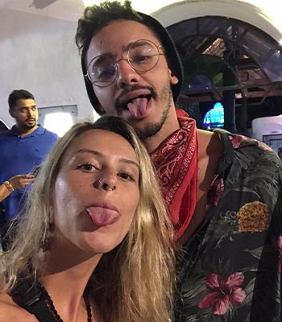
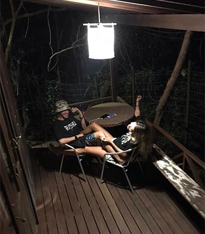
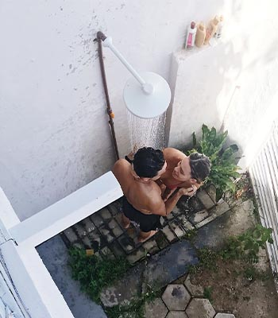
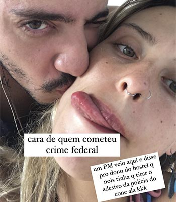
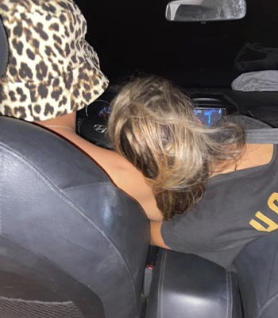
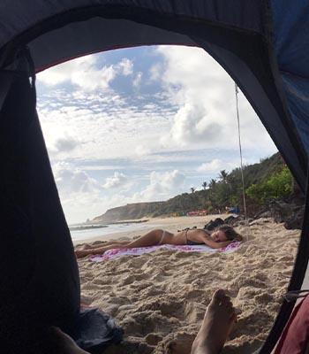
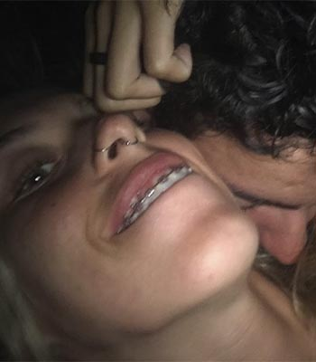
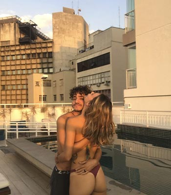
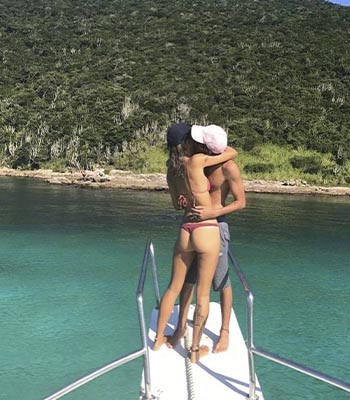

Carta
Oi neninha
Você tem uma facilidade imensa em me fazer acreditar no sobrenatural. Não dá pra ficar só achando que foi o acaso que nós juntou. Seu sorriso me fascina, suas curvas me alucina e seu jeito único de ser me faz querer esta todos os dias ao seu lado. Queria conseguir descrever a sensação tranquila e feliz que você me causa só pelo fato de acordar ao seu lado. A vida ganha cor com uma facilidade difícil de explicar. Segurar sua mão enquanto desbravamos o mundo me faz sempre querer mais e mais. Você me dá sorte. Te quero pra sempre em mim. É pra você o meu sorriso e te escolheria mil vezes na vida se fosse preciso. Eu amo te pertencer por inteiro, me entregar e ser quem realmente sou do seu lado. As vezes me sinto como um oceano e você é a única que desbrava todo o meu ser e não tem ninguém além de você que eu queira que faça isso dentro de mim. Porque você é o que eu mais quero. O que sinto por você está em outro patamar de sentir. É um amor novo todos os dias, a cada vez que te olho sinto como se fosse a primeira vez que te vi e fico deslumbrado com todo o seu ser, com cada detalhe, com cada fala, com cada jeitinho que faz você ser você. Obrigado por tanto, por tudo, por sempre, por você existir. Você mudou meu mundo e tenho tanto orgulho de você. Sempre vou tentar fazer você ver o quanto me orgulho de você por inteira. Eu te amo meu cometa ☄️ Hoje menos que amanhã e isso me deixa feliz. É muito bom viver uma grande história com você. Aqui ou em outro lugar, pode ser feio ou bonito, se nós estivemos juntos haverá um céu azul. Me sinto um explorador, olhando um telescópio e vendo as belezas do universo que você é.
Espera...
Ainda não terminou
separei algumas fotos e espero que goste.
-
Dia 1
Você é a ponta de todas as coisas boas que poderia me salvar. Obrigado por tudo que você é sem se esforçar pra ser, obrigado por você ser você mesma, e me perdoar por meus problemas. Eu te amo como se não houvesse um amanhã
-
Sorte
Que nosso amor seja capaz de unir tanto a gente a ponto da gente conseguir passar por tudo juntos Que ele seja forte a ponto de nos dar forças pra gente cuidar um do outro, pra gente ser lar um pro outro, ser aconchego, ser fortaleza, ser estabilidade.
-
O Banho
Que a gente consiga encontrar no outro um colo que faça a gente esquecer de tudo q não seja bom Que você nunca esqueça o quanto eu te amo. E que apesar de tudo, dos dias difíceis, a coisa que eu mais amo continua sendo acordar ganhando chuva de beijos de você. Não importa como meu dia seja, eu já ganho ele de manhã cedo quando vc me ganha
-
Assalto
Obrigada por tudo, pela nossa parceria, pelo nosso companheirismo. Eu quero você do meu lado pra minha vida toda. Eu tô contigo independente do que acontecer. Obrigado. Eu te amo.
-
Dirigindo
Uma coisa que amamos fazer juntos. te amo da distância daqui até a galáxia mais longe que possa existir (sem passar por nenhum buraco de minhoca) ❤️
-
Meu presente de aniversario
Enquanto você dorme eu fico aqui te protegendo, te ajeitando e te admirando. Amo ser você a pessoa que eu vejo assim que acordo. Você me transbordar e me faz muito feliz. Te amo meu cometa
-
Abraço
Tenho várias pequenas coisas para te falar, e quero começar falando que amo muito você, cada detalhe que faz você ser você me deixa mais apaixonado, não tenho controle do que sinto por você e isso as vezes me assusta, mas, de um jeito bom. Seu amor me renova de uma forma diferente, me faz acreditar em muitas coisas que já nem acreditava mais. Sua determinação me contagia e me motiva, seu olhar me paralisa pelo simples motivo de ser o mais lindo de todos e a gente conseguir conversar pelo olhar, quando seu corpo está em cima do meu eu consigo sentir sua alma abraçar a minha, quando estamos transando eu sinto que estou nadando no vácuo do espaço olhando os planetas, vendo as constelações bem de perto, aprendendo cada vez mais sobre o universo, enquanto ainda estou na terra, o universo ganha cor quando estou com você, e tudo isso porque é você, é nós dois. Seu amor em mim mostra que existe hope em meio a um mundo caótico e sem salvação.
-
Sorriso
ontem eu te disse que vc é muito detalhista... vc me respondeu “detalixta, sério?” e eu te mostrei o quanto de coisas que só você faz que vc não repara. Amor vc é único sabe. Eu odeio romantismo e melosidade mas vc me faz ter vontade de escrever uma coisa fofinha todos os dias. Não entendo. Eu só queria te agradecer hoje. E pelos detalhes mesmo. São eles que fazem a diferença. Te pedir desculpas por dormir em 5min de filme e te falar que eu vou estar acordada pra ver ele com vc outra horakkkkkk (sério). Te falar q vc aqui nanando no meu ombrinho eh a coisa mais gostosa que eu consigo imaginar do mundo. E respondendo de novo à sua pergunta de ontem: não, não me faz querer menos você olhar pra todas as paradas pesadas que vc já passou. Isso também é o que faz você ser você. Junto com as falsificações de documento e as pernas e braços quebrados por pixar muro alheio. Tudo isso é você.
-
Todos os Lugares
Estou o tempo todo aprendendo com você, sobre tudo e além de todas as ligações que temos, a gente acaba tendo uma ligação que não é tão comum nem por pessoas que passam a vida toda juntas, uma ligação de alma. Minha alma tem sede da tua e isso é novo pra mim. Vivemos uma eterna troca de energias ou seja lá qual for o nome dessa troca. Só sei que é algo incrivelmente bom. Saber que estou ao seu lado me fascina e me faz querer ficar mais. Me sinto um eterno explorador do universo que a cada momento está descobrindo planetas, estrelas, buraco negros, constelações e mesmo descobrindo tudo isso, continua tendo certeza que sempre vai faltar algo para descobrir, para aprender. Você só me mostra todos os dias que realmente é meu cometa. Um texto nunca se encaixou tão bem em alguém como o do nosso casamento.